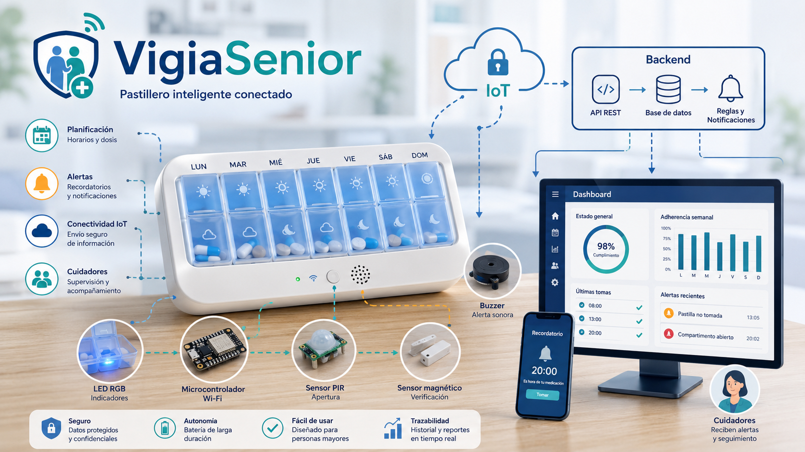

Profesorado
Contextualización, encaje curricular, secuenciación, metodología, evaluación, DUA, recursos y orientaciones para la implementación en el aula.
Abrir documentación de profesorado →Programación de aula y desarrollo técnico de un sistema de seguimiento de medicación para personas mayores, con enfoque en backend, integración IoT y documentación docente.
Este repositorio reúne la propuesta didáctica, la documentación para profesorado y alumnado, la presentación del proyecto y la parte técnica de implementación.

Entrada directa a los principales recursos del proyecto.
Contextualización, encaje curricular, secuenciación, metodología, evaluación, DUA, recursos y orientaciones para la implementación en el aula.
Abrir documentación de profesorado →Dossier del proyecto, fases de trabajo, desarrollo del backend, entregables y criterios de evaluación explicados de forma accesible.
Abrir documentación de alumnado →Material complementario para el alumnado con explicaciones, referencias técnicas y apoyo al desarrollo de la solución.
Abrir apuntes técnicos →Versión navegable de la presentación del proyecto para consulta, exposición y apoyo a la defensa oral.
Abrir presentación →Estructura del backend, simulación, hardware, documentación técnica y materiales de desarrollo del sistema.
Abrir bloque de implementación →Código fuente, historial de cambios y estructura completa del proyecto para revisión y seguimiento.
Abrir repositorio →VigiaSenior combina una propuesta didáctica con una solución técnica orientada al seguimiento de la medicación y al desarrollo de competencias propias del módulo.